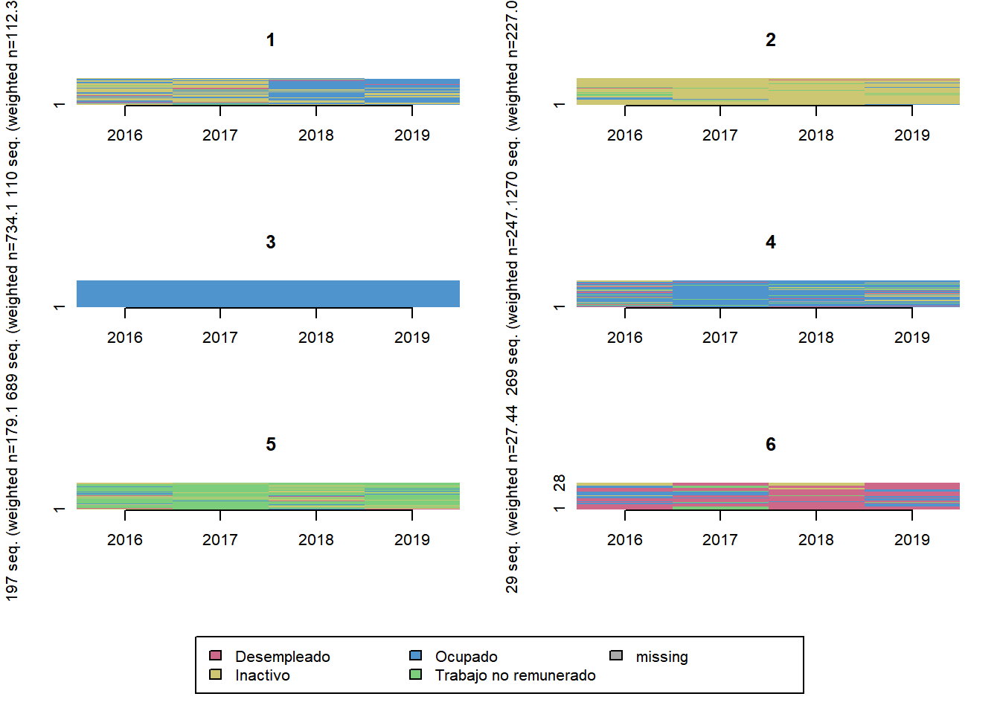
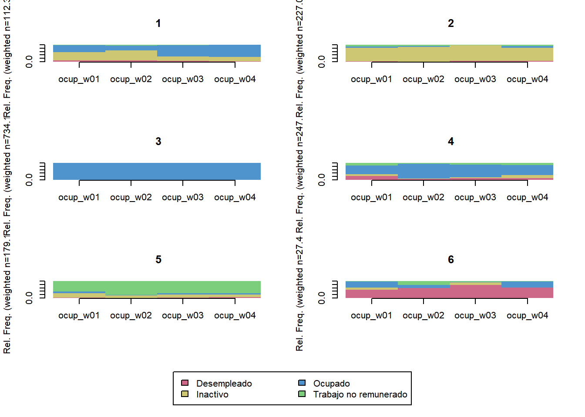
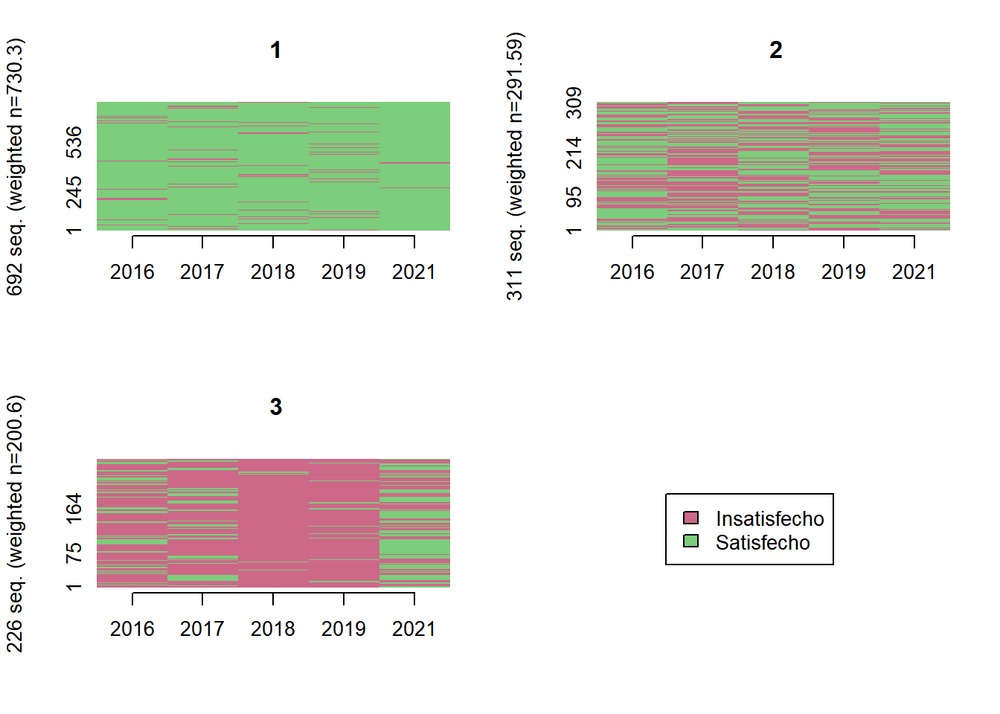
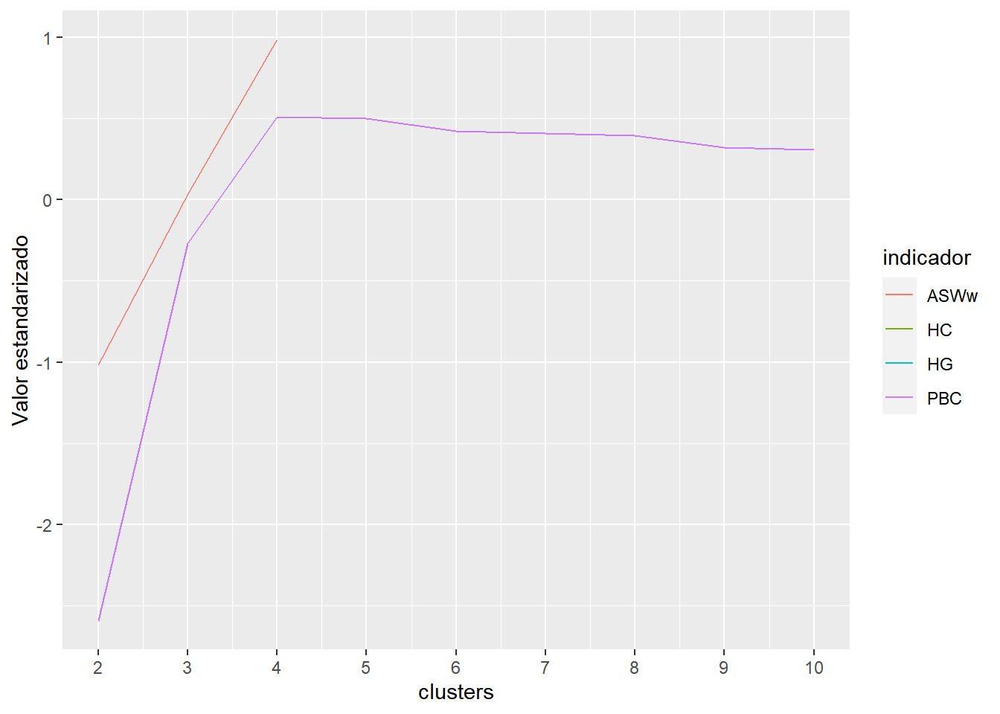
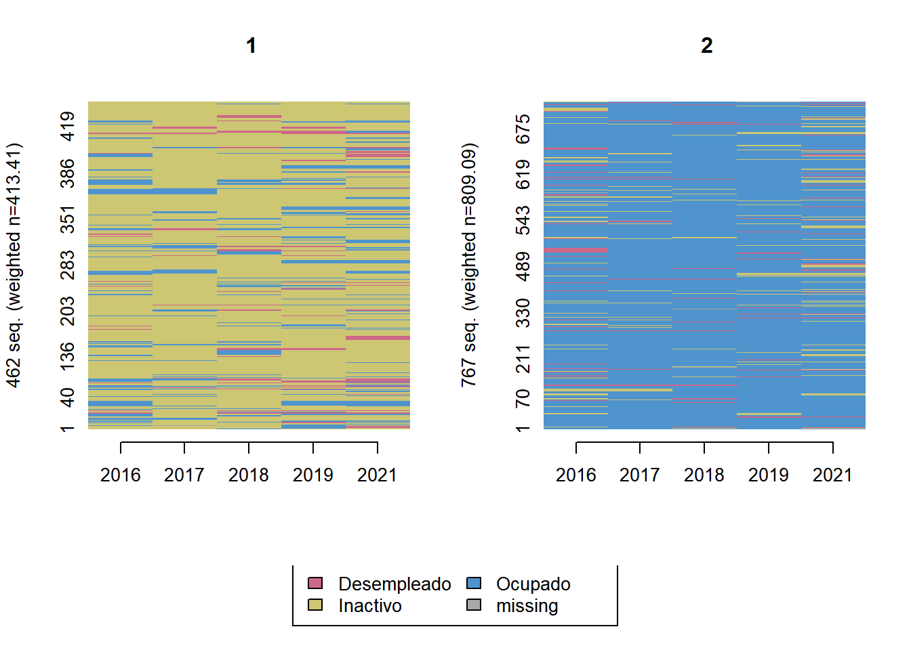
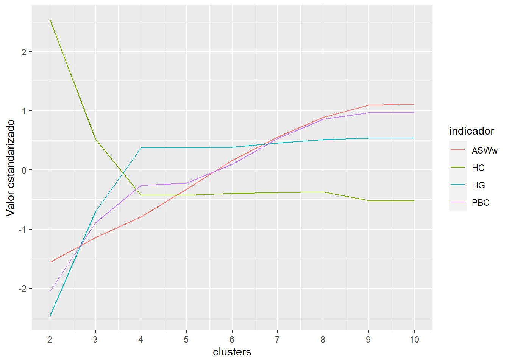
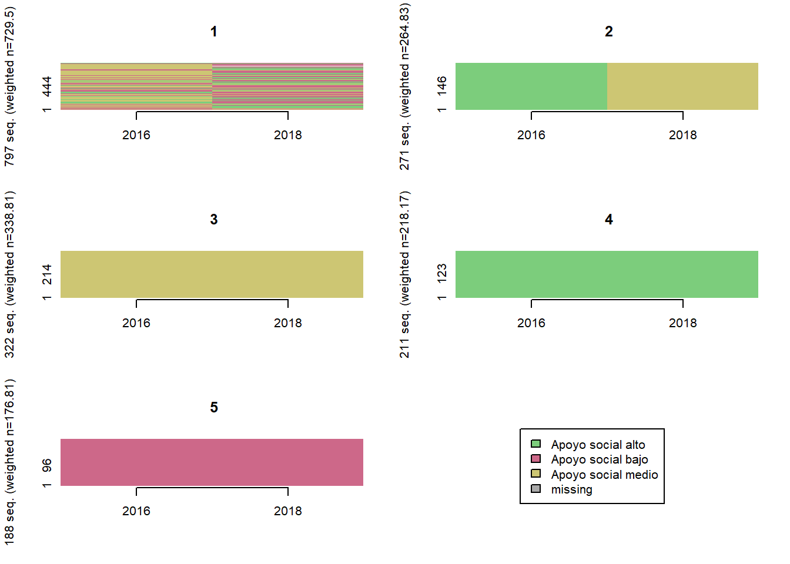
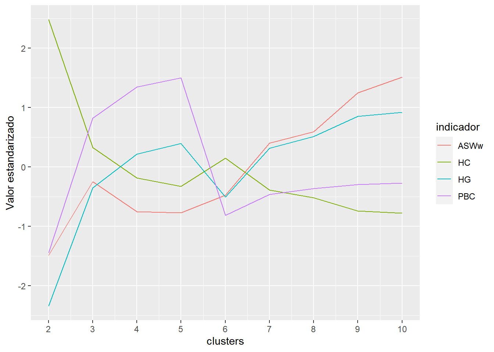

Capítulo 3 Variables modelo
Agregar variables de trayectoria de los distintos modelos
elsoc_salud_modelo <- elsoc_saludelsoc_salud_modelo$trayectoria_gmm.4lin <- factor(elsoc_salud %>%
left_join(lcmm4_lin$pprob %>% select(idencuesta, class),
by = 'idencuesta') %>%
pull(class),
levels = c(3, 1, 2, 4),
labels = c('Trayectoria baja',
'Trayectoria media/moderada',
'Trayectoria Severa', 'Trayectoria ascendente'))
elsoc_salud_modelo$trayectoria_gmm.5lin <- factor(elsoc_salud %>%
left_join(lcmm5_lin$pprob %>% select(idencuesta, class),
by = 'idencuesta') %>%
pull(class),
levels = c(2, 4, 5, 3, 1),
labels = c('Trayectoria baja-media',
'Trayectoria media-moderada',
'Trayectoria descendente',
'Trayectoria ascendente',
'Trayectoria alta-moderada'))
sjmisc::frq(elsoc_salud_modelo$trayectoria_gmm.4lin)## x <categorical>
## # total N=1789 valid N=1789 mean=1.43 sd=0.77
##
## Value | N | Raw % | Valid % | Cum. %
## ------------------------------------------------------------
## Trayectoria baja | 1258 | 70.32 | 70.32 | 70.32
## Trayectoria media/moderada | 364 | 20.35 | 20.35 | 90.67
## Trayectoria Severa | 95 | 5.31 | 5.31 | 95.98
## Trayectoria ascendente | 72 | 4.02 | 4.02 | 100.00
## <NA> | 0 | 0.00 | <NA> | <NA>sjmisc::frq(elsoc_salud_modelo$trayectoria_gmm.5lin)## x <categorical>
## # total N=1789 valid N=1789 mean=1.58 sd=0.97
##
## Value | N | Raw % | Valid % | Cum. %
## ------------------------------------------------------------
## Trayectoria baja-media | 1168 | 65.29 | 65.29 | 65.29
## Trayectoria media-moderada | 375 | 20.96 | 20.96 | 86.25
## Trayectoria descendente | 123 | 6.88 | 6.88 | 93.12
## Trayectoria ascendente | 78 | 4.36 | 4.36 | 97.48
## Trayectoria alta-moderada | 45 | 2.52 | 2.52 | 100.00
## <NA> | 0 | 0.00 | <NA> | <NA>Agregar variables independientes
elsoc_salud_modelo <- elsoc_salud_modelo %>%
filter(!elsoc::is_nsnr(m30_w01, m30_w02, m30_w03, m30_w04, m30b_w05)) %>%
mutate(
# Variables de ingreso:
m30_w01 = 1000*as.numeric(car::recode(m30_w01, "1 = 220; 2 = 250; 3 = 305; 4 = 355; 5 = 400; 6 = 445; 7 = 490;
8 = 535; 9 = 585; 10 = 640; 11 = 700; 12 = 765; 13 = 845; 14 = 935;
15 = 1040; 16 = 1180; 17 = 1375; 18 = 1670; 19 = 2275; 20 = 2700; NA = NA")),
m29_w01_imp = ifelse(is_nsnr(m29_w01), m30_w01, m29_w01),
ypc_w01 = m29_w01_imp / nhogar1_w01,
m30_w02 = 1000*as.numeric(car::recode(m30_w02, "1 = 220; 2 = 250; 3 = 305; 4 = 355; 5 = 400; 6 = 445; 7 = 490;
8 = 535; 9 = 585; 10 = 640; 11 = 700; 12 = 765; 13 = 845; 14 = 935;
15 = 1040; 16 = 1180; 17 = 1375; 18 = 1670; 19 = 2275; 20 = 2700; NA = NA")),
m29_w02_imp = ifelse(is_nsnr(m29_w02), m30_w02, m29_w02),
ypc_w02 = m29_w02_imp / nhogar1_w01,
m30_w03 = 1000*as.numeric(car::recode(m30_w03, "1 = 220; 2 = 250; 3 = 305; 4 = 355; 5 = 400; 6 = 445; 7 = 490;
8 = 535; 9 = 585; 10 = 640; 11 = 700; 12 = 765; 13 = 845; 14 = 935;
15 = 1040; 16 = 1180; 17 = 1375; 18 = 1670; 19 = 2275; 20 = 2700; NA = NA")),
m29_w03_imp = ifelse(is_nsnr(m29_w03), m30_w03, m29_w03),
ypc_w03 = m29_w03_imp / ifelse(is_nsnr(m54_w03), NA, m54_w03),
m30_w04 = 1000*as.numeric(car::recode(m30_w04, "1 = 220; 2 = 250; 3 = 305; 4 = 355; 5 = 400; 6 = 445; 7 = 490;
8 = 535; 9 = 585; 10 = 640; 11 = 700; 12 = 765; 13 = 845; 14 = 935;
15 = 1040; 16 = 1180; 17 = 1375; 18 = 1670; 19 = 2275; 20 = 2700; NA = NA")),
m29_w04_imp = ifelse(is_nsnr(m29_w04), m30_w04, m29_w04),
ypc_w04 = m29_w04_imp / ifelse(is_nsnr(m54_w04), NA, m54_w04),
log_ing = log((ypc_w01 + ypc_w02 + ypc_w03 + ypc_w04)/5),
quintil_w01 = statar::xtile(ypc_w01, n = 5, wt = ponderador02_w01),
quintil_w01 = factor(quintil_w01,
levels = 1:5,
labels = glue::glue('Quintil {1:5}')),
quintil_w02 = statar::xtile(ypc_w02, n = 5, wt = ponderador02_w02),
quintil_w02 = factor(quintil_w02,
levels = 1:5,
labels = glue::glue('Quintil {1:5}')),
quintil_w03 = statar::xtile(ypc_w03, n = 5, wt = ponderador02_w03),
quintil_w03 = factor(quintil_w03,
levels = 1:5,
labels = glue::glue('Quintil {1:5}')),
quintil_w04 = statar::xtile(ypc_w04, n = 5, wt = ponderador02_w04),
quintil_w04 = factor(quintil_w04,
levels = 1:5,
labels = glue::glue('Quintil {1:5}')),
# Nivel educacional:
educ_w01 = factor(car::recode(m01_w01, recodes = "1:3 = 1; 4:5 = 2; 6:7 = 3; 8:10 = 4"),
levels = 1:4,
labels = c("Basica", "Media", "Tecnica", "Universitaria")),
# Situación ocupacional:
ocup_w01 = factor(car::recode(m02_w01, "1:3 = 1; 6 = 2; c(4, 5, 8, 9) = 3; 7 = 4"),
levels = 1:4,
labels = c('Ocupado', 'Desempleado', 'Inactivo', 'Trabajo no remunerado')),
ocup_w02 = factor(car::recode(m02_w02, "1:3 = 1; 6 = 2; c(4, 5, 8, 9) = 3; 7 = 4"),
levels = 1:4,
labels = c('Ocupado', 'Desempleado', 'Inactivo', 'Trabajo no remunerado')),
ocup_w03 = factor(car::recode(m02_w03, "1:3 = 1; 6 = 2; c(4, 5, 8, 9) = 3; 7 = 4"),
levels = 1:4,
labels = c('Ocupado', 'Desempleado', 'Inactivo', 'Trabajo no remunerado')),
ocup_w04 = factor(car::recode(m02_w04, "1:3 = 1; 6 = 2; c(4, 5, 8, 9) = 3; 7 = 4"),
levels = 1:4,
labels = c('Ocupado', 'Desempleado', 'Inactivo', 'Trabajo no remunerado')),
# Sobrecarga de deudas
sobrecarga_deuda_w01 = factor(car::recode(m43_w01, "1:2 = 1; 4:5 = 2; else = NA"),
labels = c('Nada/No muy sobrecargado',
'Bastante/Muy sobrecargado')),
sobrecarga_deuda_w03 = factor(car::recode(m43_w03, "1:2 = 1; 4:5 = 2; else = NA"),
labels = c('Nada/No muy sobrecargado',
'Bastante/Muy sobrecargado')),
# Apoyo social
apoyo_social_w01 = factor(car::recode(s12_w01, "1:2 = 1; 3:4 = 2; 5 = 3"),
levels = 1:3,
labels = c('Apoyo social bajo', 'Apoyo social medio', 'Apoyo social alto')),
apoyo_social_w03 = factor(car::recode(s12_w03, "1:2 = 1; 3:4 = 2; 5 = 3"),
levels = 1:3,
labels = c('Apoyo social bajo', 'Apoyo social medio', 'Apoyo social alto')),
# Actividad física regular
activ_fisica_w01 = factor(s04_w01 %in% 1:3,
labels = c('Sin actividad fisica regular', 'Con actividad fisica regular')),
activ_fisica_w03 = factor(s04_w03 %in% 1:3,
labels = c('Sin actividad fisica regular', 'Con actividad fisica regular')),
# Estado de salud
salud_w01 = factor(car::recode(s03_w01, "1 = 1; 2:3 = 2; 4:5 = 3; else = NA"),
labels = c('Mala', 'Regular/buena', 'Muy buena/excelente')),
salud_w02 = factor(car::recode(s03_w02, "1 = 1; 2:3 = 2; 4:5 = 3; else = NA"),
labels = c('Mala', 'Regular/buena', 'Muy buena/excelente')),
salud_w03 = factor(car::recode(s03_w03, "1 = 1; 2:3 = 2; 4:5 = 3; else = NA"),
labels = c('Mala', 'Regular/buena', 'Muy buena/excelente')),
salud_w04 = factor(car::recode(s03_w04, "1 = 1; 2:3 = 2; 4:5 = 3; else = NA"),
labels = c('Mala', 'Regular/buena', 'Muy buena/excelente')),
salud_w05 = factor(car::recode(s03_w05, "1 = 1; 2:3 = 2; 4:5 = 3; else = NA"),
labels = c('Mala', 'Regular/buena', 'Muy buena/excelente')),
# Fumador
fuma_w01 = factor(s08_w01 >= 1,
labels = c('No fuma', 'Fumador')),
fuma_w03 = factor(s08_w03 >= 1,
labels = c('No fuma', 'Fumador')),
# IMC
imc_w01 = ifelse(is_nsnr(s06_w01), NA, s06_w01) / (ifelse(is_nsnr(s05_w01), NA, s05_w01/100))^2,
imc_w03 = ifelse(is_nsnr(s06_w03), NA, s06_w03) / (ifelse(is_nsnr(s05_w03), NA, s05_w03/100))^2,
# Personalidad
s22_01_w02 = ifelse(is_nsnr(s22_01_w02), NA, s22_01_w02),
s22_02_w02 = ifelse(is_nsnr(s22_02_w02), NA, s22_02_w02),
s22_03_w02 = ifelse(is_nsnr(s22_03_w02), NA, s22_03_w02),
s22_04_w02 = ifelse(is_nsnr(s22_04_w02), NA, s22_04_w02),
s22_05_w02 = ifelse(is_nsnr(s22_05_w02), NA, s22_05_w02),
s22_06_w02 = ifelse(is_nsnr(s22_06_w02), NA, s22_06_w02),
s22_07_w02 = ifelse(is_nsnr(s22_07_w02), NA, s22_07_w02),
s22_08_w02 = ifelse(is_nsnr(s22_08_w02), NA, s22_08_w02),
s22_09_w02 = ifelse(is_nsnr(s22_09_w02), NA, s22_09_w02),
s22_10_w02 = ifelse(is_nsnr(s22_10_w02), NA, s22_10_w02),
extraversion_w02 = 6 - (s22_01_w02) + s22_06_w02 ,
agreeableness_w02 = s22_02_w02 + 6 - s22_07_w02,
conscientiousness_w02 = 6 - s22_03_w02 + s22_08_w02 ,
neuroticism_w02 = 6 - s22_04_w02 + s22_09_w02,
openness_w02 = 6 - s22_05_w02 + s22_10_w02,
# Direccion vida
proyecto_vida_w03 = factor(s30_01_w03 %in% 4:5,
labels = c('No decidido dirección de vida', 'Decidido dirección de vida')),
# Desigualdad percibida
percepcion_desigualdad_w01 = factor(c18_11_w01 %in% 4:5,
labels = c('Desigualdad no muy grande', 'Desigualdad muy grande')),
percepcion_desigualdad_w02 = factor(c18_11_w02 %in% 4:5,
labels = c('Desigualdad no muy grande', 'Desigualdad muy grande')),
percepcion_desigualdad_w03 = factor(c18_11_w03 %in% 4:5,
labels = c('Desigualdad no muy grande', 'Desigualdad muy grande')),
percepcion_desigualdad_w04 = factor(c18_11_w04 %in% 4:5,
labels = c('Desigualdad no muy grande', 'Desigualdad muy grande'))
)3.1 Crear y agregar trayectorias de variables independientes
comparar_clusters <- function(.data, vars, K = 10) {
seq <- TraMineR::seqdef(.data,
var = vars,
weights = .data$ponderador02_w01)
dist <- TraMineR::seqdist(seq,
method = "LCS",
with.missing = TRUE)
ward <- cluster::agnes(dist, diss = TRUE, method = 'ward')
# Comparar soluciones con diferentes numeros de trayectorias (se prueban de 2 a 10 clusters)
ward.range <- WeightedCluster::as.clustrange(ward, diss = dist, ncluster = K)
# Visualizar clusters:
ward.range$stats %>%
mutate(clusters = 2:10) %>%
pivot_longer(cols = c(ASWw, HG, PBC, HC),
names_to = 'indicador',
values_to = 'value') %>%
group_by(indicador) %>%
mutate(value = (value - mean(value, na.rm = TRUE)) / sd(value, na.rm = TRUE)) %>%
ggplot(aes(y = value, x = clusters, color = indicador, group = indicador)) +
geom_line() +
scale_x_continuous(breaks = 2:10)
}trayectoria <- function(.data, vars, K, olas = 2016:2019, MISSING = TRUE, ...) {
seq <- TraMineR::seqdef(.data,
var = vars,
...,
weights = .data$ponderador02_w01)
dist <- TraMineR::seqdist(seq,
method = "LCS",
with.missing = MISSING)
ward <- cluster::agnes(dist, diss = TRUE, method = 'ward')
TraMineR::seqIplot(seq, group = stats::cutree(ward, k = K),
border = NA,
space = 0, idxs = 0, xtlab = olas)
TraMineR::seqdplot(seq, group = stats::cutree(ward, k = K),
border = NA,
space = 0)
}Situación ocupacional (4 categorías)
comparar_clusters(elsoc_salud_modelo,
vars = c('ocup_w01', 'ocup_w02', 'ocup_w03', 'ocup_w04'))
trayectoria(elsoc_salud_modelo,
vars = c('ocup_w01', 'ocup_w02', 'ocup_w03', 'ocup_w04'),
cpal = c('palevioletred3', 'khaki3', 'steelblue3', 'palegreen3'),
K = 3)
trayectoria(elsoc_salud_modelo,
vars = c('ocup_w01', 'ocup_w02', 'ocup_w03', 'ocup_w04'),
cpal = c('palevioletred3', 'khaki3', 'steelblue3', 'palegreen3'),
K = 4)
trayectoria(elsoc_salud_modelo,
vars = c('ocup_w01', 'ocup_w02', 'ocup_w03', 'ocup_w04'),
cpal = c('palevioletred3', 'khaki3', 'steelblue3', 'palegreen3'),
K = 5)
trayectoria(elsoc_salud_modelo,
vars = c('ocup_w01', 'ocup_w02', 'ocup_w03', 'ocup_w04'),
cpal = c('palevioletred3', 'khaki3', 'steelblue3', 'palegreen3'),
K = 6)

# Agregar trayectoria de 6 clusters
seq <- TraMineR::seqdef(elsoc_salud_modelo,
var = c('ocup_w01', 'ocup_w02', 'ocup_w03', 'ocup_w04'),
weights = elsoc_salud_modelo$ponderador02_w01)
dist <- TraMineR::seqdist(seq,
method = "LCS",
with.missing = TRUE)
ward <- cluster::agnes(dist, diss = TRUE, method = 'ward')
elsoc_salud_modelo$trayectoria_ocup <- factor(stats::cutree(ward, k = 6),
levels = c(3, 1, 4, 2, 5, 6),
labels = c('Ocupados estables',
'Oscilan entre inactividad y ocupacion',
'Ocupados con períodos sin ocupación',
'Mayoritariamente inactivos',
'Mayoritariamente trabajo no remunerado',
'Mayoritariamente desempleados'))Sobrecarga por deudas
comparar_clusters(elsoc_salud_modelo,
vars = c('sobrecarga_deuda_w01', 'sobrecarga_deuda_w03'))
trayectoria(elsoc_salud_modelo,
vars = c('sobrecarga_deuda_w01', 'sobrecarga_deuda_w03'),
olas = c(2016, 2018),
cpal = c('palevioletred3', 'palegreen3'),
K = 4)
trayectoria(elsoc_salud_modelo,
vars = c('sobrecarga_deuda_w01', 'sobrecarga_deuda_w03'),
olas = c(2016, 2018),
cpal = c('palevioletred3', 'palegreen3'),
K = 5)trayectoria(elsoc_salud_modelo,
vars = c('sobrecarga_deuda_w01', 'sobrecarga_deuda_w03'),
olas = c(2016, 2018),
cpal = c('palevioletred3', 'palegreen3'),
K = 6)

# Agregar trayectoria de 3 clusters
seq <- TraMineR::seqdef(elsoc_salud_modelo,
var = c('sobrecarga_deuda_w01', 'sobrecarga_deuda_w03'),
weights = elsoc_salud_modelo$ponderador02_w01)
dist <- TraMineR::seqdist(seq,
method = "LCS",
with.missing = TRUE)
ward <- cluster::agnes(dist, diss = TRUE, method = 'ward')
elsoc_salud_modelo$trayectoria_deuda <- factor(stats::cutree(ward, k = 5),
levels = c(4, 3, 1, 2),
labels = c('Nada/No muy sobrecargados deuda',
'Reducción sobrecarga deuda',
'Aumento sobrecarga deuda',
'Bastante/muy sobrecargados deuda'))Actividad física regular
comparar_clusters(elsoc_salud_modelo,
vars = c('activ_fisica_w01', 'activ_fisica_w03'))
trayectoria(elsoc_salud_modelo,
vars = c('activ_fisica_w01', 'activ_fisica_w03'),
olas = c(2016, 2018),
cpal = c('palegreen3', 'palevioletred3'),
K = 2)
trayectoria(elsoc_salud_modelo,
vars = c('activ_fisica_w01', 'activ_fisica_w03'),
olas = c(2016, 2018),
cpal = c('palegreen3', 'palevioletred3'),
K = 4)trayectoria(elsoc_salud_modelo,
vars = c('activ_fisica_w01', 'activ_fisica_w03'),
olas = c(2016, 2018),
cpal = c('palegreen3', 'palevioletred3'),
K = 5)# Agregar trayectoria de 3 clusters
seq <- TraMineR::seqdef(elsoc_salud_modelo,
var = c('activ_fisica_w01', 'activ_fisica_w03'),
weights = elsoc_salud_modelo$ponderador02_w01)
dist <- TraMineR::seqdist(seq,
method = "LCS",
with.missing = TRUE)
ward <- cluster::agnes(dist, diss = TRUE, method = 'ward')
elsoc_salud_modelo$trayectoria_activ_fisica <- factor(stats::cutree(ward, k = 4),
levels = c(2, 3, 4, 1),
labels = c('Sin actividad fisica persistente',
'Abandonan actividad fisica en 2021',
'Se activan en 2021',
'Con actividad fisica persistente'))Apoyo social
comparar_clusters(elsoc_salud_modelo,
vars = c('apoyo_social_w01', 'apoyo_social_w03'))
trayectoria(elsoc_salud_modelo,
vars = c('apoyo_social_w01', 'apoyo_social_w03'),
cpal = c('palegreen3', 'palevioletred3', 'khaki3'),
olas = c(2016, 2018),
K = 4)

trayectoria(elsoc_salud_modelo,
vars = c('apoyo_social_w01', 'apoyo_social_w03'),
cpal = c('palegreen3', 'palevioletred3', 'khaki3'),
olas = c(2016, 2018),
K = 5)
# Agregar trayectoria de 3 clusters
seq <- TraMineR::seqdef(elsoc_salud_modelo,
var = c('apoyo_social_w01', 'apoyo_social_w03'),
weights = elsoc_salud_modelo$ponderador02_w01)
dist <- TraMineR::seqdist(seq,
method = "LCS",
with.missing = TRUE)
ward <- cluster::agnes(dist, diss = TRUE, method = 'ward')
elsoc_salud_modelo$trayectoria_apoyo_social <- factor(stats::cutree(ward, k = 5),
levels = c(5, 4, 2, 1, 3),
labels = c('Apoyo social estable',
'Apoyo social/decreciente',
'Apoyo social medio',
'Apoyo social cambiante',
'Sin apoyo social'))Salud subjetiva
comparar_clusters(elsoc_salud_modelo,
vars = c('salud_w01', 'salud_w02', 'salud_w03', 'salud_w04', 'salud_w05'))
trayectoria(elsoc_salud_modelo,
vars = c('salud_w01', 'salud_w02', 'salud_w03', 'salud_w04', 'salud_w05'),
cpal = c('palevioletred3', 'palegreen3', 'khaki3'),
K = 3)

trayectoria(elsoc_salud_modelo,
vars = c('salud_w01', 'salud_w02', 'salud_w03', 'salud_w04', 'salud_w05'),
cpal = c('palevioletred3', 'palegreen3', 'khaki3'),
K = 4)

trayectoria(elsoc_salud_modelo,
vars = c('salud_w01', 'salud_w02', 'salud_w03', 'salud_w04', 'salud_w05'),
cpal = c('palevioletred3', 'palegreen3', 'khaki3'),
K = 5)
# Agregar trayectoria de 3 clusters
seq <- TraMineR::seqdef(elsoc_salud_modelo,
var = c('salud_w01', 'salud_w02', 'salud_w03', 'salud_w04', 'salud_w05'),
weights = elsoc_salud_modelo$ponderador02_w01)
dist <- TraMineR::seqdist(seq,
method = "LCS",
with.missing = TRUE)
ward <- cluster::agnes(dist, diss = TRUE, method = 'ward')
elsoc_salud_modelo$trayectoria_salud <- factor(stats::cutree(ward, k = 4),
levels = c(4, 3, 2, 1),
labels = c('Salud subjetiva muy buena',
'Salud subjetiva regular/muy buena',
'Salud subjetiva regular',
'Salud subjetiva mala/regular'))3.2 Guardar datos para usar después
save(elsoc_salud_modelo, file = 'datos_salud_modelo.RData')
# sjlabelled::write_stata(x = elsoc_salud_modelo %>%
# rename(trayectoria_om4_4 = trayectoria_om4.4,
# trayectoria_om4_5 = trayectoria_om4.5,
# trayectoria_gmm_4lin = trayectoria_gmm.4lin,
# trayectoria_gmm_5lin = trayectoria_gmm.5lin
# ),
# path = 'datos_salud_modelo.dta')